| 백제 |
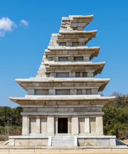 |
익산 미륵사지 석탑
(전북 익산) |
현존하는 한국 최고(가장 오래된)의 석탑
목탑의 구조와 양식을 돌로 재현한 과도기적 탑
탑 내부에서 사리 장엄구, 금제 사리 봉안기 출토
|
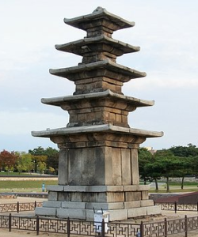 |
부여 정림사지 오층 석탑
(충남 부여) |
국보로 지정, 부여 사비도성의 중심 사찰에 위치
목탑에서 석탑으로 넘어가는 과도기적 형태
백제 석탑 예술의 정수
나당 연합군의 백제 멸망 후 세운 탑 ➝ '평제탑'이라고도 불림
|
| 신라 |
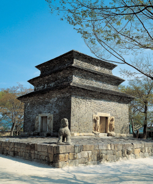 |
경주 분황사 모전 석탑
(경북 경주) |
선덕여왕 때 창건(634)
현존하는 신라 석탑 중 가장 오래된 탑
돌을 벽돌 모양으로 다듬어 쌓은 모전 석탑
전탑(벽돌탑)의 양식을 모방한 석탑
|
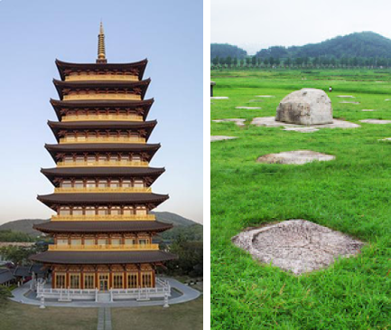 |
경주 황룡사 구층 목탑
(경북 경주) |
선덕여왕 때 자장의 건의로 건립(645)
높이 약 80m로 추정, 당시 동아시아 최대 규모 목탑
9층은 주변 9개 적국을 물리친다는 호국 상징
고려 고종(1238년) 때 몽골 침입 시 소실 ➝ 현재 터만 남음
|
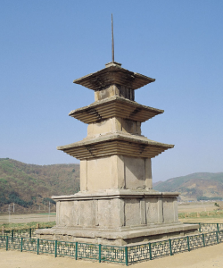 |
경주 감은사지 삼층 석탑
(경북 경주) |
신문왕이 문무왕의 호국 의지를 기리기 위해 건립(682)
2층 기단 위에 3층 탑신을 올린 통일 신라 전형 양식
이후 통일 신라 석탑의 기본 형식(이중기단 삼층석탑)을 확립
|
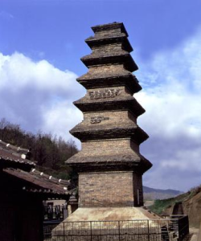 |
안동 법흥사지 칠층 석탑
(경북 안동) |
원형이 보존된 한국 최고(가장 오래된)의 전탑(벽돌탑)
높이 약 17m로 국내 전탑 중 가장 큰 규모
중국 당나라 전탑 양식의 영향을 받음
탑 기단부에 불상 · 사천왕상 등이 새겨져 있음
|
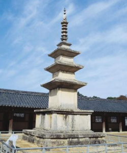 |
경주 불국사 삼층 석탑
(경북 경주) |
불국사 대웅전 앞 서쪽에 위치
통일 신라 중대 전형적 석탑 양식의 완성형
탑신부에서 『무구정광대다라니경』 출토
|
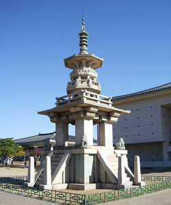 |
경주 불국사 다보탑
(경북 경주) |
불국사 대웅전 앞 동쪽에 위치
기존 석탑 양식과 달리 층수 구분이 명확하지 않음
10원짜리 동전 도안으로 사용됨
|
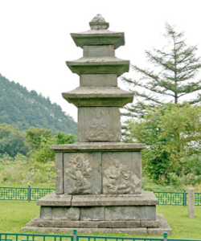 |
양양 진전사지 삼층 석탑
(강원 양양) |
신라 하대(9세기)의 석탑
기단부와 1층 탑신부에 불상을 조각한 점이 특징
|
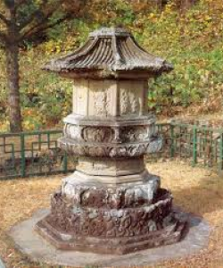 |
화순 쌍봉사 철감선사 승탑
(전남 화순) |
신라 하대 선종의 유행으로 등장한 고승 사리탑(승탑)
팔각원당형으로 이후 고려 승탑의 기본 형식이 됨
|
| 발해 |
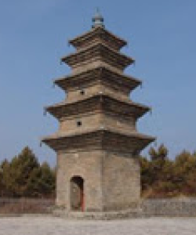 |
영광탑
(중국 지린성) |
중국 당나라의 영향을 받아 벽돌로 쌓은 전탑(벽돌탑)
발해 유일의 현존 탑
발해의 불교 수용과 문화 수준을 보여주는 유물
|
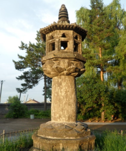 |
석등
(중국 흑룡강성) |
절 앞에 두는 등불 구조물
통일 신라 석등 양식의 영향을 받음
|
고려
~
조선 |
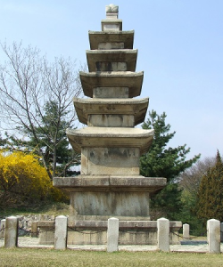 |
개성 불일사 오층 석탑
(북한 개성) |
고려 초기를 대표하는 석탑
고구려 탑 건축 양식을 계승한 형태
|
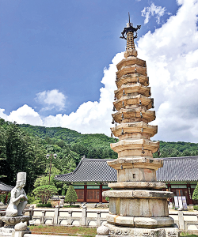 |
평창 월정사 팔각 구층 석탑
(강원 평창) |
송의 영향을 받은 고려 석탑
팔각형 평면 구조가 특징 (신라 사각형 탑과 차별화)
|
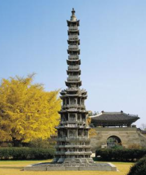 |
개성 경천사지 십층 석탑
(국립중앙박물관) |
원의 영향을 받은 고려 후기 석탑
조선 원각사지 십층 석탑의 직접적 모델이 됨
일제강점기 때 일본 반출 ➝ 반환 후 국립중앙박물관 전시
|
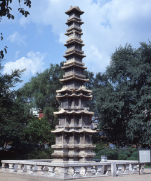 |
서울 원각사지 십층 석탑
(서울 종로) |
세조 때 개성 경천사지 십층 석탑을 모델로 건립(1467)
상륜부가 없고 사층부터 평면 형태가 달라지는 독특한 구조
임진왜란 이후 폐사 ➝ 현재 탑만 탑골공원에 남아 있음
|